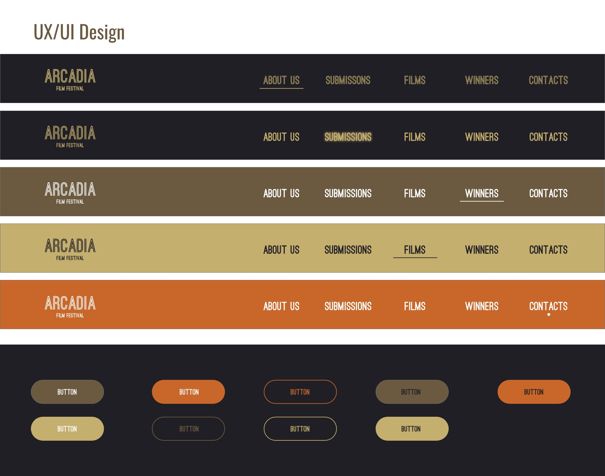

Brief Project Description
For this project, we will be creating a website for the Arcadian Film Festival to celebrate a fusion of classical civilizations and contemporary cinema. This will serve as a hub for filmmakers, enthusiasts, and industry professionals to engage, share and explore multiple genres through the lens of film.
The client’s primary goal is to have a website that filmmakers can use to submit/promote their films while also allowing film enthusiasts and industry professionals a way to experience these films.
The scope of this project consists of the creation of a user-friendly website interface that is responsive across all devices, the creation of an extensive archive section featuring past festival events, film screenings, discussions and award winners and finally interactive features for film submission (along with information for film submission), award voting and community engagement to boost user participation and provide a unique and lasting user experience.
Objectives and Goals
Sharing experiences and ideas with filmmakers, film enthusiasts and industry professionals
Providing filmmakers with the ability to submit and promote their films in order to gather attention locally but also on a global scale.
Highlighting the films submitted by displaying some crucial information such as the film description, duration, actors, producers, directors and genre.
The ability to let users know when future film events are coming and where to find them.
The ability to purchase tickets for film showings that require them.
Access to an archive of past film events and films.
Information for Film Submission.
The ability to vote films for awards.
Target audience and user goals
Target audience
Film enthusiasts
Filmmakers
Film Industry Professionals
User Statement
As a passionate film enthusiast with an interest in Ancient Greek and Rome culture, I am looking forward to immersing myself in a vibrant community dedicated to celebrating the diverse art of film that Arcadia has to offer and with this not only enhance my passion for film but also get the chance to network with like-minded individuals consisting of filmmakers, film enthusiasts and industry professionals.
User Needs
- The ability to access a diverse selection of films with their key information such as film description, genre, actors, directors and film duration.
- A way to be updated with event information such as upcoming screenings, discussions and workshops, ensuring users don’t miss out on the events.
- A seamless and convenient ticket purchasing system to allow users a way to secure their spots at film screenings and events.
- The ability to engage within their community of film enthusiasts.
- Film submission information which will consist of clear guidelines, deadlines and submission forms so filmmakers can submit their films on time.
- Promotional opportunities so filmmakers can gain exposure for their work and attract attention from both local and global audiences.
- Industry insights consist of knowledge of industry professionals that will be present at the event to give filmmakers more of an incentive to submit their works in hopes of being scouted and advancing their careers.
Audits of Existing Websites
Toronro Film Festival
To start off the Toronto Film Festival has good SEO, running the website through SEO audits yields results of B. The website has excellent On-Page SEO allowing search engines to almost always make sure it’s the first website up when you type in keywords such as “film”, “film festival”, “Canada film festival”, “toronto film” and even “toronto festival”. The links are all functional with next to no dead links, the only way to improve them is to make them more human and Search Engine readable.
However, a big issue is the total page file size. The page is very media heavy with videos playing in the background while also being filled with images which ends up meaning it runs a bit slower on dated machines and slower internet connections. Due to this when resizing the window the website takes a bit to resize the website content.
The only glaring issue is the lack of an obvious call to action for Film Submission, this may be due to the fact that the festival is over and they are preparing for their 2024 festival; however, some information for future submissions and an easy way to access it would be very useful. To get to submissions I had to google tiff submissions due to the fact I couldn’t find it on the homepage so this is definitely something that needs to be improved.
Overall, the website is great with a consistent theme and no inconsistencies with heading tags or typography. Everything has a good hierarchy and it is completely responsive so it works on all devices.
Atlanta Film Festival
We’ll be focusing on the films section of the website. The films section provides an interactive search filter that allows users to search for a title of a film, details about a film, or credits about a film. Users are able to click the buttons within the filter and the films will filter to its results.
Of course, this isn’t the best filter system they’ve created. The filters provided are a mix of genres, film makers, and the type of film it is (e.g. short film, animation, episodic, etc). It makes it difficult to glance at the filter and pick out which one sounds the most interesting to us. The colors also clash with each other and make everything more overwhelming.
The way the films are organized on that page is very pleasant. With a portrait image as the movie poster for each film, it makes it more engaging to the page and provides the more authentic feeling of movies and films. However, the movie text on top of the image creates a distraction that takes away attention from the movie poster.
Detailed list of delieverables
Web Pages
Homepage
Submission Page
All films page
Film description page
Previous winners showcase page
About us page
Features
Digital submission form
Category selection functionality
Winner announcement section
Sponsor acknowledgment section
Consideration for additional buttons, such as donate or share buttons, to encourage engagement and support for the festival
Specifications of design and functionality
Design
Reflect festival’s creative spirit with web-specific branding with a logo
Ensure accessibility by incorporating adjustable type size and contrast options
Functionality
User-friendly interface
Streamlined digital submission process
Responsive layout for optimal viewing on various devices (mobile, tablet, desktop)
Content requirements (text, images, videos)
Text
Engaging and informative content for all pages, including festival information, submission guidelines, and sponsor acknowledgement
Images
High-quality images for website branding, festival posters, and previous winning films
Videos
Trailers or excerpts from previous winning films for showcase purposes
Overall project timeline from start to finish. (January 8 - April 16)
Key milestones and deadlines for each phase (e.g., design, development, testing)
Research and Content Gathering
Project Planning
Project Discovery
Project 1 Bootstrap page w/Project Plan in February 12th
Design Phase
Term Project Wireframes on Monday, February 26th
Development
Term Project Static Prototype/UI Design in March 11
Term Project - CMS & template configuration
Testing and Quality Assurance
Fix, Improve, and Optimize in April 1
Client Approval and Revisions
Consultations and Feedback in April 8th
Deployment
Term Project Due/Final Deployment in April 16th
Allocation of team members to specific tasks or roles
Collin Adoma
Project Plan ContributorAshley Le
Project Plan ContributorMaria Sison
Record Keeper & Project Plan ContributorMarco Tse
Project Plan ContributorJames Yee
Communitaction Lead & Project Plan Contributor
Design guidelines (branding, color schemes, typography)
Technical specifications (platforms, languages, frameworks)
Hosted on Github
Webflow
Adobe XD
Figma
CodePen
Sublime Text
Responsiveness and accessibility considerations
Accessible for tablet & mobile users
Included Nav Bar and Buttons
Content creation, sourcing, and management
Page content will consist of a diverse selection of short films which are sourced through our received submissions from filmmakers and any collaborations with other film festivals.
We will also have comprehensive listings for film screenings, discussions, workshops and other related events which we will update regularly to ensure accuracy and relevance.
The creation of engaging content such as articles, interviews, reviews and behind-the-scene features will be sourced through collaboration with film critics, historians, and industry professionals willing to provide educated and insightful perspectives.
Content such as reviews, comments and discussions will also be user-generated to foster community engagement and participation.
Finally we will also make sure to integrate social media platforms to share festival updates, highlight featured films and to engage with our audience across several social media platforms. This will also help maximize the reach and visibility.
SEO strategy for content optimization
Research will be conducted to find relevant terms and phrases which can be used as keywords throughout the website for the most optimisation.
Website content will be optimized by including target keywords not only within the keywords but also in the meta tags, headings and image alt attributes - this will help boost On-Page SEO.
There will be a focus on creating relevant content so ensuring that the content is well-written and engaging for our target audience.
Making sure the website is fully responsive across all platforms by using responsive design. By making the website mobile-friendly we can improve user experience and search rankings.
Finally, implementing local SEO by including location-specific keywords such as Arcadia, Greece and Rome.
Using Google Analytics to look at our website analytics and also using tools such as Google My Business for local listings and reviews.
For quality assurance testing we will use tools such as:
This is to ensure that the website is up to date with Accessibility requirements and SEO optimization.
Functional Testing
For testing we can conduct tests of all the website's functionalities to ensure that navigation, film listings, event listings, ticket purchasing and submission forms are all up to date and there are no broken links present.
We will also test responsiveness across various devices and browsers to ensure compatibility and consistency.
Usability Testing
Gather feedback from a group of users through usability testing sessions or surveys.
Using the feedback we can then identify pain points, usability issues and areas for improvement.
Content Review
Reviewing all the website content to make sure it’s relevant, accurate and consistent.
Ensuring the content is well-written, free of grammatical errors and is aligned with the Arcadian theme and our website objectives.
Performance Testings
Measure website loading times and other performance metrics using Google PageSpeed Insights.
Security Testing
Conducting security audits and vulnerability scans to identify potential security threats.
Implementing things such as SSL encryption and other security methods to protect against SQL injections and cross-site scripting.
Ensuring regular software, plugin and framework updates to patch security vulnerabilities that may arise.
Accessibility Testing
Finally using WAVE we can make sure that the website has excellent accessibility.
After the successful creation of the Short Film Festival website, our commitment extends beyond its launch to ensure ongoing support and maintenance. With a focus on reliability and efficiency, our team will utilize GitHub domain hosting, aligning with our preferred platform for website deployment. This choice ensures seamless integration and facilitates swift updates whenever necessary. Ideally the website will update biannually for before and after the festival.
Hosting on github will restrict in-depth levels of customization. Other than further customization, github hosting seems safe, low-cost, maintainable, and relatively easy-to-use. In the event of github going down, we run the risk of our own website going down as well. If this becomes a problem we can migrate to a different hosting service.
Maintenance and updates will happen at least biannual based on the festival and seasons. Metrics and performance evaluation will be obtained using Google Analytics to collect data and review. Digital marketing will be managed using social media communications.